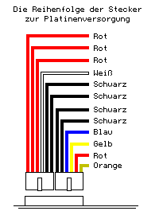

Previous
Next
TOC
Die Steckerbelegung des PC Netzteiles ist baugleich mit der Belegung
des MegaSTE und TT030 Netzteiles. Also einfach das andere Netzteil
mit der entsprechenden Stiftleiste der Hauptplatine verbinden.

Falls folgende Fehler (alle Festplatten abgeklemmt, nur Floppy dran:
Rechner bootet zwar durch, es erscheint aber ein farblich ziemlich
reduzierter Bildschirm: Hintergrund grün, Menüleiste schwarz, Lauf-
werksymbole als unförmige schwarze Flecken, Maus als breiter
schwarzer Balken.) am Rechner auftauchen sollte man mal folgendes am
Netzteil (egal welcher Typ) überprüfen:
Ich würde vermuten, daß Du eingetrocknete (sprich überalterte) Elkos
im Netzteil hast und das Netzteil deshalb unter Last manchmal nicht
richtig funktioniert. Also mal die Versorgungsspannungen unter Last
mit einem Oszilloskop ansehen und testen, ob sich das Problem ver-
schlimmert, wenn man Elkos mit Kältespray einfriert, oder einfach
alle Elkos im Netzteil MIT SCHALTFESTEN TYPEN erneuern.
Kapitel Die Steckerbelegung des PC Netzteiles, Seite 2